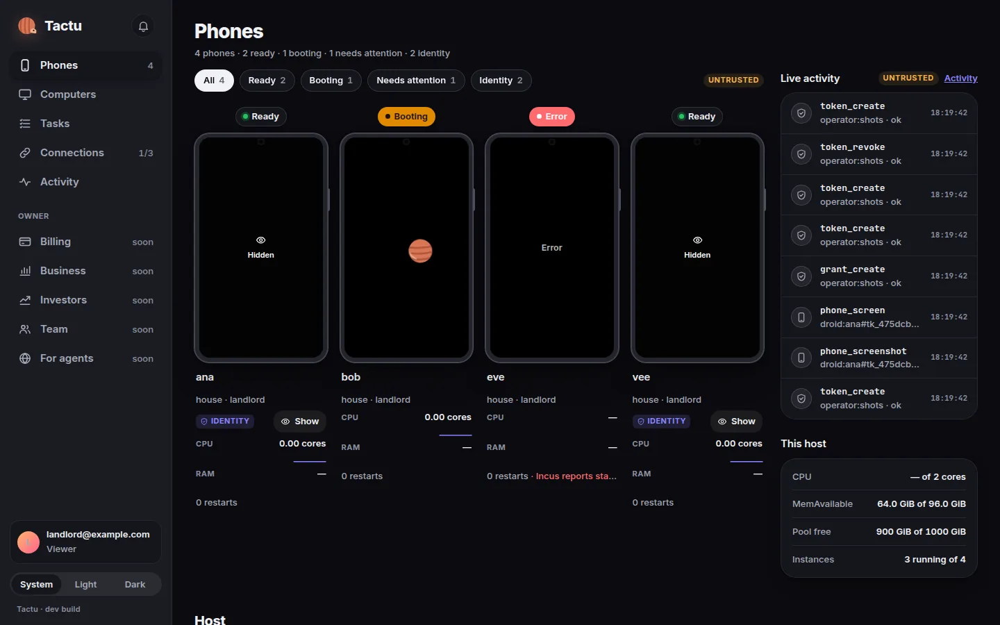

Member
Tactu
Phones and computers for AI agents, over MCP. Its experiment: a collaborative economy for automation, tested in the open.
OpensIts code (self-hosted core, Apache-2.0, planned with the early-adopter launch) and its accounts.
A question.A discovery.Something taught.Something passed on.
Everything we know arrived through someone.
Across generations.Across languages.Across lives we will never know.
No single mind wrote it.
Yet contributing to intelligence does not give us a say in its future.
Who can build with it?Who can examine it?Who gets to decide?
Built from all of us.
Held by a few.
What if we could help shape what comes next?
The freedom to understand.The means to build.A meaningful choice.
A future we can help shape.
Intelligence can make more possible.
Who benefits when it does?
Progress should reach the people who use it, the people who improve it, and the foundations that keep it available.
Let the gains travel.
Open Economy means rules people can understand, costs anyone can examine, and explicit ways to share the benefits. It is a commitment, not one economic model for everyone.

A member of the movement. Tactu gives AI agents phones and computers to work on.
Its experiment: when an errand gets cheaper, who should benefit?
Every errand uses real resources: phone time, computing, energy.
Running it costs10 unitsExample
Someone makes it faster, and shares how.
The same errand now needs fewer resources.
Running it costs10 6 unitsExample
Who gets the 4 units it saves?
| Rule | Price after | Buyer saves | Seller keeps |
|---|---|---|---|
| The usual modelSavings stay with the seller | 12 | 0 | 6 |
| Half the savingsProposal | 10 | 2 | 4 |
| Cost + 20%Proposal | 7.2 | 4.8 | 1.2 |
Markup is set on cost, not on the price, so a 20% markup is not a 20% margin. Tactu hasn't chosen a rule. It proposes to test them and publish what happens.
Tactu proposes to open its books and its code.
Tactu is in early access for a small group, with no prices yet, so nothing here is a real figure.
Research needs resources. Builders need tools. Shared ambition needs infrastructure.
Initiatives are a place to put our principles to work: concrete projects, each with its own page, terms and evidence. There are two so far.
Different projects. Different contributions. A shared commitment to what intelligence can make possible for more people.
Phones and computers for AI agents, over MCP. Its experiment: a collaborative economy for automation, tested in the open.
OpensIts code (self-hosted core, Apache-2.0, planned with the early-adopter launch) and its accounts.
A lab contributing research and infrastructure.
The GitHub organization behind Genie and Omni.
OpensOpen-source repositories, including Genie (MIT) and Omni (Apache-2.0).
Give it one decided task: it builds the change, has a different agent review it, and opens a pull request. Merging stays with you.
OpensSource code, MIT license.
One API for every messaging channel: WhatsApp, Discord, Slack, Telegram and more, as one event-driven system.
OpensSource code, Apache-2.0 license.
A founder of Namastex Labs.
“I’m signing Open Intelligence. I want to help build a future more people can understand, question, and shape.”
When a supporter agrees to be shown, their point in the network gets a name and the kind of contribution they bring: research, infrastructure, evaluation or funding. Conversations still in progress are never shown as commitments.
This panel will track published launch-readiness criteria, each with its method, version and evidence. It can go down as well as up, and it only changes when new evidence is verified.
Read it first: open the manifesto. Signing is public, so it asks for your explicit consent.
The conversation happens in a WhatsApp group, Open Intelligence BWF. Scan with your phone, or open it directly.
We inherited a world of ideas we could never have created alone.
Let’s give others something they can understand, question, and carry forward.
A future we can help shape.
computing…
Draft 0.8 · not anchored yet. When version 1.0 is final, its fingerprint will be written into Bitcoin, so anyone can check it word for word.
All three are calculated from the same maths of sunflowers, shells and galaxies. Try each one on and the field takes its shape. Then tell us which one is us.
Everything below uses the mark you chose. Copy it, download it, print it, wear it. Use it for anything that keeps the pledge.
Nothing here is for sale, yet. Make your own.
Your photo with the Open Intelligence band. Your photo stays on your device.
Shows that a project builds in the open.
For products and packaging that keep the pledge. It marks the part built in the open, not everything around it.
Round, die-cut, dark ground.
Not for sale, yet. Take the file to any print shop.
The mark on a dark ground, 1170 × 2532.
Every size comes from the maths, so scale them, never redraw them.
Intelligence never began with one of us.
We inherit words we did not invent, discoveries we did not make, and lessons someone else paid dearly to learn. A teacher makes room for a question. A researcher publishes a finding. A maintainer fixes a problem for people they will never meet.
Everything we know arrived through someone.
Today, that inheritance is helping us build systems that can change how we learn, work, discover, and create. Their possibilities are extraordinary. So are the decisions taking shape around them.
Who can build with them? Who can examine them? Who gets to decide what they become? And who shares in what they make possible?
Contributing to intelligence does not yet give everyone a meaningful say in its future. Too much of that future depends on decisions most people cannot inspect, influence, or leave behind.
We want more people to have a hand in what comes next.
That takes tools people can understand. Research they can question. Infrastructure they can access. The freedom to adapt what they rely on, and the ability to choose something else.
It also takes resources.
Servers need electricity. Research takes time. Software needs maintenance. People doing essential work need a way to keep doing it.
We welcome the people and organizations willing to help: independent builders, researchers, communities, businesses, and investors. Capital can make important work possible. Enterprise can carry an idea into the world. We want the terms of that participation to be clear, and its benefits to reach further.
When intelligence becomes more efficient, who benefits?
We believe the answer should include the people who use it, the people who improve it, and the shared foundations that keep it available. Better systems should create opportunities for broader access. Useful contributions should have paths to recognition and support. The costs of progress should be visible enough to question.
This is the work of an open economy: making it possible to sustain what we build while sharing more of what it enables.
We are beginning with practical initiatives. Bringing demand and capital together. Testing shared infrastructure. Publishing assumptions, costs, and results. Learning which arrangements work, and changing those that do not.
Private lives should not become the price of participation. People should be able to help others without surrendering their personal history. Where improvements can be shared, we should make that possible with consent and care for what those improvements may reveal.
The work we inherit deserves more than a footnote. Scientific ideas, open software, models, tools, and the people maintaining them are part of the foundation. We want to credit that work and help sustain it.
We also owe each other honest uncertainty.
Open systems can fail. Ambitious ideas can be wrong. A promising demonstration can fall apart outside the conditions that made it work. We need people who can test, challenge, repair, and improve what we create — and findings that are allowed to change our minds.
No single project speaks for humanity. This movement begins as an invitation to contribute, disagree, and help make its commitments real.
Bring a question from your work. A problem from your community. A skill someone else can build on. Bring resources, scrutiny, or the patience to maintain something useful.
We inherited a world of ideas we could never have created alone.
Let’s give others something they can understand, question, and carry forward.
Open Intelligence.
A future we can help shape.
The manifesto says what we want. The charter says how we hold ourselves to it.
Everyone who takes the pledge votes from day one. Responsibility for proposals and stewardship is earned by contributing.
Confirming you are one person prevents fake accounts. It never requires publishing your legal identity.
Propose → review → evidence → acceptance → publication → maintenance.
Every contribution gets a public record: authors, license, origin, purpose, results, limits and reviewers. A rejection comes with a reason and a right to appeal. Acceptance, funding and installation are separate decisions: being accepted doesn't mean being paid, and being approved never means being installed on anyone's machine automatically.
The institution is transparent. People have the right to privacy.
Budgets, income, spending, grants and their criteria are public. Every payment points to what was approved, by whom, for what, and what was delivered. Personal bank details and protected information never are.
We use a public ledger to record what must be verifiable: approvals, treasury movements, versions of this manifesto, and the publication of contributions. There is no tradable token. Contributing earns credit and voice, not a financial asset. No one needs to buy crypto or manage a wallet to take part.
Open projects have been captured before. We write the protections down now, while it's easy.
Open intelligence. Built together. For everyone.